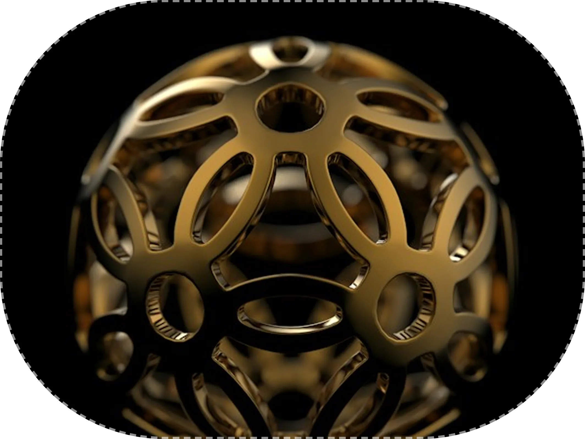

Slow craft
No shortcuts. A bag takes 38 hours, and we will not rush it for a deadline.
Stackly began in 2012 as a two-person workshop in Florence, and still works like one.

We started with a bench, a pair of shears and a promise to repair anything we sold. Twelve years later we are 40 artisans, and the promise is the same.
Each piece is cut, stitched and signed by hand, then logged in a ledger so it can be repaired for life. Many of our earliest bags are still in daily use.
We grow only as fast as we can train people, which is why our waiting lists exist.

What twelve years of slow work looks like.
Every figure here comes from our own ledgers. We publish them each January, along with what each product category cost to make.
Three promises we make to every client.
No shortcuts. A bag takes 38 hours, and we will not rush it for a deadline.
We publish what each piece costs to make, what we pay artisans and what we keep.
Every item is repairable for life, and we keep spare parts for every pattern we have retired.
The moments that shaped the atelier.
Two artisans, one bench and 14 bags in the first year.
Our Sand Moon automatic launches in an edition of 100.
We commit to lifetime repairs on every piece we have ever made.
Our tannery partner and shipping reach a verified net zero.
Three of the artisans you will meet if you visit.

Thirty years at the bench, and signer of our first bag.

Trained in Neuchâtel, he leads movement assembly and servicing.

Sources every hide and metal, and audits each supplier on site.

Our leather is vegetable-tanned in Tuscany using bark, not chrome, and every hide is traced to a named farm. Our gold is recycled, and our packaging is compostable.
We publish an annual materials report so you can check what we say against what we buy.
We hire and train a few apprentices each year. No experience needed, only patience and good hands.
Inquire about roles